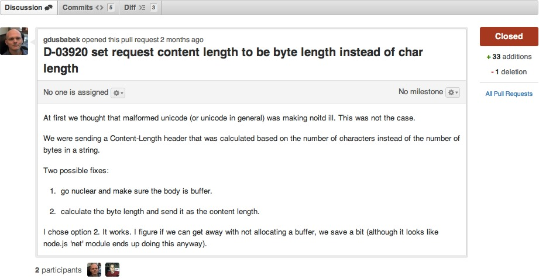

Code Review Best Practices
Paul Querna
May 4, 2012
Why Code Reviews?
- Code Credit:
- Long term feature velocity
- Higher quality design
- Improved interfaces
- Fix bugs before they impact environments
Why Code Reviews?
- Operations and Dev:
- Remove SPOF: More people have seen the code when it breaks. It will break.
Why Code Reviews?
- Education:
- Exposure to new components
- Easier to understand evolution of systems in small chunks
Practices
- It is about the Code:
- Ask why is this code here, not why did you do this.
- Give positive feedback on interesting code and ideas too.
Practices: Code Submission
- Small Code reviews.
- 200-300 lines maximum.
- Cherry-pick independent bug fixes to smaller pull requests
- Avoid whitespace changes, they are distractions.
Practices: Code Submission
- Create Annotations about the code.
- Pull request description provides context for reviewer

Practices: Code Review
- 30 minute chunks of reviewing.
- Make it a habit in your day.
Practices: Code Review
- Think about design.
- What are your ideas based on the Story and Pull Request description.
- Build up a personal checklist.
- Ask questions.
Checklists
- Nothing is hard and fast.
- Learn and share what you look for.
Checklist: HTTP
- Contract matches Docs
- Methods: GETs are read only
- URLs: Make sense, reasonable regex in path routing
- POSTs: Partial Updates, invalid structure of JSON
Checklist: Network Protocols
- Distributed systems have multiple versions online at once.
- Thrift/RPC: Any changes!
Checklist: Input/Output
- Whitelists, not blacklists.
- Regular Expressions
Checklist: Interfaces
- Tend to be set in limestone. (sand that over time turns to harder rock)
- Changes impact on non-tested code.
Checklist: Functions and New Variables
- (C/C++) Cleanup of new Variables, struct members
- Changes to entry and exit paths.
Checklist: Python
{} in kwargs vs None- Code ran on module import.
- Use Django built in methods.
Checklist: Style
- Who wrote this code? Can you tell?
- Consistency means you read the code, not the style
Checklist: Tests
- Positive, Negative.
- Think about what is missing.
- Think with malice.
Checklist: Concurrency
- It is extremely hard.
- Evented, Threaded, doesn't matter.
- Shared variables are only the beginning.
- Read it again.
Begin Commentary.